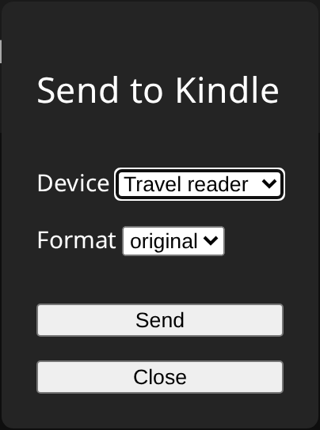

A plugin for Jellyfin 12.4
From Jellyfin
to Kindle.
Send a book from Jellyfin Web. Pick a device and format, then check the job status in the same dialog.
Based on vitorpy’s original Send to Kindle plugin.
The Jellyfin Web workflow
Start on the book page.
The plugin adds Send to Kindle to eligible Books in Jellyfin Web. The chooser lists the devices and formats you have configured for that book.




Follow the job.
“Accepted by mail provider” means the mail provider received the submission. Check your Kindle library to confirm delivery.
Compatibility & setup
Before you install.
This release targets Jellyfin Server 12.4.0 with Jellyfin Web. Sending is limited to signed-in administrators.
Read the install guide View administrator settings screenshot Jellyfin catalog manifest
- Jellyfin Web dependency
- Install File Transformation to enable the book-page action. This release was tested with version 3.0.3.0.
- Mail account
- Enter your SMTP sender and devices in the plugin dashboard. A Purelymail preset and custom TLS settings are included. Administrators who already operate a compatible delivery API can select it instead.
- Books and formats
- Use a Jellyfin Books library. Direct SMTP supports EPUB and PDF. Optional Google Books lookup fills missing metadata in eligible EPUB copies. Remote service mode also offers derivatives available from your service.
Common questions.
Who can send a book to Kindle?
Signed-in Jellyfin administrators with access to the book and permission to download it. Remote service mode also checks access at the delivery service.
Can I configure SMTP in Jellyfin?
Yes. Open the plugin dashboard, choose SMTP, configure your sender and devices, and test the connection. Remote service mode is available for installations with a separate delivery service. Read the delivery contract.
Can I send to more than one Kindle?
Yes. Add a label and recipient for each device in the dashboard. Each send selects one device, so send again to choose another.
Where should I look if the action is missing?
Verify that you’re signed in as an administrator, that the item is an eligible Book, and that File Transformation is installed and active. See the setup and troubleshooting guide.